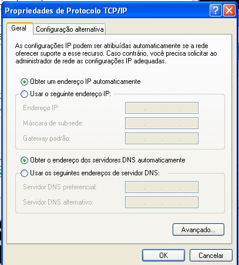

DHCP
O que é DHCP e quando utilizar:
O DHCP simplifica a configuração de dispositivos em redes e ajuda a garantir que todos os dispositivos tenham as informações de configuração necessárias para se comunicar com outros dispositivos na rede.
Instalação
Para instalação do DNSMASQ em uma máquina linux basta digitar o comando:
apk add dnsmasq
para ver o estado do serviço:
service dnsmasq status
Configuração
Para configurar, criamos um arquivo (asa.conf) no diretório (dnsmasq.d).
Para editar o arquivo, digite:
nano /etc/dnsmasq.d/asa.conf
Definição da faixa de ip (ip inicial, ip final, máscara de rede, tempo que o dispositivo fica com o ip)
dhcp-range=10.0.19.10,10.0.19.100,255.255.255.0,12h
Definiçao do DNS
dhcp-option=3, 10.0.0.19.254
DNS Google (opcional)
dhcp-option=6,8.8.8.8
Definição do domínio (opcional)
dhcp-option=15,pernambuco.lab
Local do LOG
log-facility=/var/log/dnsmasq.log
OBSERVAÇÃO:
rc-service dnsmasq start para iniciar o serviço
rc-service dnsmasq stop para parar o serviço
Teste
Em seguida segue a imagem da configuração do servidor:

Configuração dos clientes:
